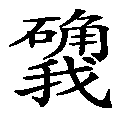

六 放弃储蓄资具
作为真正知足少欲、清心寡欲的好修行人，除修行必备品以外，不应该攒集、积累不必要的资具。
加哲仁波切针对诸多过患而恳切嘱咐：“（此乃）修行歧途当力舍此生；
加哲仁波切叮嘱我们说：我们要避免修行中最大的歧途、迷处，就是一定要舍弃今世。意思是如果舍弃今世的念头没有生起，那么修行的歧途就没有消除，总有一天，仍然会耽著今世。作为一个修行人，尤其是出家人，总有一天会还俗，或者致力于追逐世间的名闻利养，这就是修行中最大的违缘。
利养乃缚当斩欲牵连；
获得财物和恭敬等利养，实际上是一种束缚，我们应当尽力断除施主、亲友的牵连。以前噶当派的大修行人与现在的许多修行人不同，现在的修行人依靠佛法口口声声说令众生积累善根、修持善法，但实际上他们是表里不一的，变成了自他束缚轮回、不得解脱之因。也许他人作布施、供养会有善根，但过后他们也持有邪见，供养完毕又对出家僧人满腹怨言，所以我们对利养应该仔细加以分析。
名声无义当弃此耽执。
名声也无有毫许实义，今天你名扬天下了，但是在人生短短的几十年中能否用得上？无论你今生是一个怎样如雷贯耳的大修行人，但对自己的来世却没有丝毫的利益。更何况，当今世界一个修行人无论是活佛、大上师、大法师，名声再大也远远比不上影视明星和演员的一分，他们每到一个城市中，铺天盖地的人就开始盲目地崇拜。但是不管是一个怎样有名望的大德来到同样的城市，不可能有如此多的人崇拜，所以所谓的名声也只是假名安立的。对名声、利养等的贪著，作为修行人来讲是最难以割舍的烦恼。
若无随遇而安知足心，积累资财增长罪苦因。
要做到随遇而安就是无论你的衣食是怎样的境况都会心满意足，除了希求真正的智慧以外对任何事物都有一种满足感，这样就会非常快乐，除此之外，积累资财就会增长痛苦和增长罪业。
若欲增上安乐及善根，依凭知足意乐乃窍诀。
如果你真正要获得善根和快乐就要知足少欲，这就是传承上师们最甚深的窍诀。有些人经常这样请求：“上师您老人家可不可以给我传一个甚深的窍诀？”但是如果我们对他说要知足少欲，不要贪得无厌，他一定会不以为然，但实际上这就是甚深的窍诀。
是故操持利养名声等，此生圆满心行当屏弃。
因此，我们作为修行人应当舍弃所有的名闻利养、所有追求今生圆满的行为和发心。
临终注定具利之胜法，应当无散恒时精进修。”
对临终最有利的善法，有些人认为是颇瓦法或者是宝瓶气，但我觉得这些不是很重要的。为什么呢？只有对生生世世有利的法才是最重要的，正如我们曾经讲过的，如果你在发菩提心和殊胜愿之中死去，会使你在生生世世中变成具有出离心和菩提心的人。所以，如果你真正具有大圆满的殊胜境界最好不过。如果没有，就应该发利益众生和舍弃今世之愿。因此，我们活着的时候应当修持对临终最有利的法门，尤其是我们现在就受此类教育，在几十年中修持看破今生、舍弃今世的法门，到了临终之时在自相续中一定会生起坚固的定解！
基巴云：“若于幻财不知足，精勤积攒终遗留，独自积累他人享，此乃心语当牢记。
基巴尊者这样说：人们对所拥有的幻化财产贪得无厌、不知满足，精勤于攒积、守护，所积的财产全部留于后世。其实人死之后对他的财产仍然会很贪著，自己含辛茹苦地攒积，最终自己却不一定有享用它的机会。
《毗奈耶经》中也记载着这样一个公案：从前有一个叫尼嘎的比丘，从外表来看他有知足少欲的功德，但他死去以后竟留下了三千两黄金，未生怨王对这笔财产生起了贪欲心，准备据为己有，后来佛陀专门派人对他捎口信说：“以何道理在尼嘎比丘生前未曾与他有任何来往，在他死后却欲将他的财产据为己有？”最终未生怨王也没能得到那笔财产。
现在影视圈中刚死不久的张国荣、梅艳芳，他们的财产全部被基金会等其他人享用了。因此说，辛苦积存的财产，他本人并不一定能享用，全部留给别人。这样的道理大家应该铭刻于心。
不愿希求究竟义，暂时所需未舍弃，断除贪著何等难！愿弃耽执祈加持。
我们很多人不希求利益众生、获得佛果等最究竟的利益，却特别喜欢一些暂时所需，暂时分发的一些财物，大家都会非常注意，究竟有利的一些法本大家不一定如此重视，我们断除今世暂时受用的贪执都是何等的困难！但愿断除这些执著，祈祷上师三宝加持自己，这个意思。
虽未以名摄徒眷，终究无力弃信众，抛弃世事何等难！无伴独居祈加持。”
虽然并非以希求名利的发心，但却摄受了众多的眷属，对于这些具信的信徒，舍弃他们、抛弃世事也是困难重重。
大概基巴也如同现在的我一样，虽然不愿意希求名利，但不知是什么业力所牵，已经聚集了众多眷属，现在全部抛弃他们，未免太不合乎情理。每一个人都非常可怜，如果没有给他们传法，可能过了五六年以后，有些人会还俗变成一个在家人，所以，基巴尊者也是此意。我们刚刚讲了舍弃今世，抛弃眷仆，不要为寻求名声而宣讲佛法，但有时大概是众生的业力所感，抛弃世事是何等困难啊！但愿我没有任何伴侣，孑然一身独居清净的深山。他这样求上师三宝的加持。
至尊仁达瓦也云：“除三法衣以及钵盂等，自己生存必须资具外，黄金珠宝等等其他物，芝麻毫许自己亦莫持。”
至尊仁达瓦是这样宣说的：除了法衣、法本、钵盂等真正生活必需品以外，其他金银等财物连芝麻许也不要带在身边。
巴Ra瓦也千叮万嘱：“未知积蓄终被何人携，尚且不生布施之心念。一旦斩除贪恋欲妙心，四洲财物为其所掌管。”
同时，巴Ra瓦也嘱咐我们说：不知道我们辛勤积累的财产最终会被谁带走，不生起布施的念头真是非常愚痴。一旦谁断除了自相续中的贪恋之心，那么四大部洲所有的财产都将被此人掌管。为什么这么说呢？因为他没有贪心，这与拥有四大部洲所有财产没有什么差别。贪得无厌的人去城市中化缘，很想得到别人手中的财产，看到比较富裕的居士，就会像具足神通一样的，很快就能认识对方，他的电话号码也落到了此人的手中。现代社会所造就的现代人就是如此。知足少欲的人相反不会去管别人的财产，对自己所具的财产了然于心，不需要再向他处攀缘。外表上看来，修行人都是一样的，尤其是出家人都没有头发，两只耳朵都比较明显，看不出他是否具有贪心，但是从行为中，是否贪财还是显而易见的。
所以，但愿大家从内心深处，无论是否去做善事，都没有必要去做非法的恶事，应该断除所有的束缚，大概是很多人没有听过《三十忠告论》的原因吧，有些修行人的行为不太如法，我希望住在学院里的人都是专注于闻思修行的人，对闻思修行没有兴趣，想要修建寺院的人和有神通神变的人，学院的环境不一定很适合他，此类人暂住一段时间后，慢慢离开好一些，住在学院里的人，种姓应该定下来，这一点很重要。
“除非无有及断绝，丰足剩余永无时，强者掠夺弱者盗，浊世财物难留存。”
除非根本没有财产，或者是已经断绝了财产来源的人，没有丰足的财物，并且也没有这方面的需求，否则财物就是痛苦之因。
为什么这么讲呢？当今末法时代强者会夺，弱者会盗，所以浊世的财产很难以留存。积累财产的过程也是百般苦楚，尤其对修行人来讲知足少欲是非常重要的。虽然戒律中开许过可以享用无勤中获得的财物，但这一点也是从享用分而言的，实际上一个财源广进的修行人，修行不会成功的。
当今物欲横流的时代，我们这里的有些出家人做得很好，不喜欢别人供养他手机、电脑等各种五花八门的东西，仍喜欢如同古代一样以比较贫穷的方式过清净的生活，如果喜欢过奢华的生活，想尽各种办法与居士联络就不难办到，但我们应该选择清心寡欲的生活。
以前竹庆仁波切不会把糌粑箱子放在自己的面前，他认为这样会令心散乱，但我认为糌粑箱子放在面前不一定会令心散乱，恰恰是电脑等各种现代化的电器当真会令心散乱。古代的高僧大德对糌粑箱子都如此地排斥，现在令人眼花缭乱的物品就更不必分说了。很多人虽然不能回到远古去生活，但是却很向往过那样的生活，我们对好人应该有好的评价，对坏人自然给予坏的评价，好修行人愿意在艰苦的地方安住下来，修行不好的人很自然地就在这种环境中离开了，他认为这不该是他安住的环境。我们讲《君规教言论》的时候也多次提到过，如果对好人、坏人都没有相应评价，全部鱼龙混杂，好修行人也不愿再安住在这里了，希求世间八法和名闻利养的人反而越来越多了。
上师离开以后，我们不管在这里住多久，还是应该尽量地闻思修行，应该尽量保持一种清净、有意义的生活，这是我们大家共同的希望，能否实现当然很难把握，因为每个人的能力是有限的。如果这里野蛮的人多如牛毛，真正闻思修行的人却寥若晨星，心中的愿望不能实现，环境也于己不相适合的时候，独自离开是很简单的，不需要三天。但既然上师给我们创立了这样好的学院，我们还是应该努力地闻思修行，希望大家不要致力于积累财产，这不是我们发展的方向。
〖第六 放弃储蓄资具品释终〗